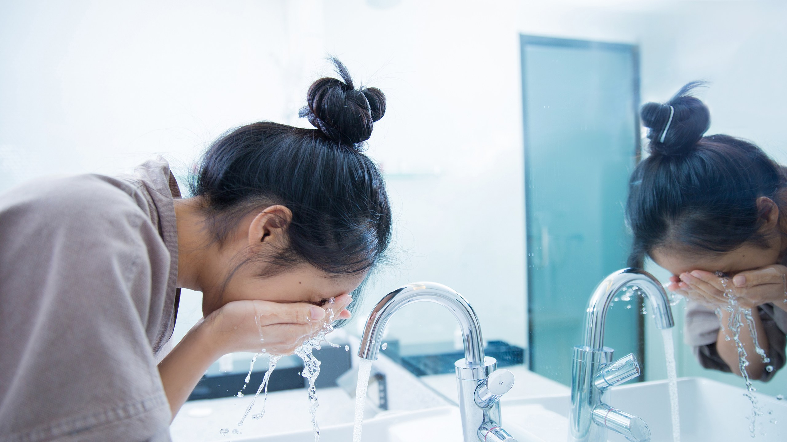

Every day as soon as you wake up, wash your face with warm water and a gentle cleanser that’s formulated for your skin type. Massage your face using circular motions, but don’t scrub it roughly. Remember, the skin on your face is delicate, so it’s important to wash it gently.
Avoid using super-hot water to wash your face, as this can dry out your skin.
After you wash and tone your face, spread a pea-sized amount of moisturizer over your skin. Also, to protect yourself from the sun, opt for a moisturizer with at least SPF 15 and UVA/UVB protection. If you’ll be outdoors where you might sweat heavily, or if you’ll be swimming, plan to reapply your SPF at least every 2 hours.
In fact, a popular alternative called the low-carb diet has been shown to be much more effective for weight loss than the high-carb diet that has been recommended for the past few decades.This diet restricts your intake of carbohydrates like sugars and starches (breads, pasta, etc.) and replaces them with protein, fat and healthy vegetables.
About once a week, use a face mask that’s formulated for your skin type. There are a number of different masks on the market, from clay masks to sheet masks, and each one is designed to target certain skin problems or concerns. Choose the one that’s right for you, and apply it to clean skin. Follow any instructions on the packaging, such as whether to apply the mask to wet or dry skin, how long to leave it on, and how to remove it.
For instance, if you have dry skin, you might use a nourishing mask made of white clay.